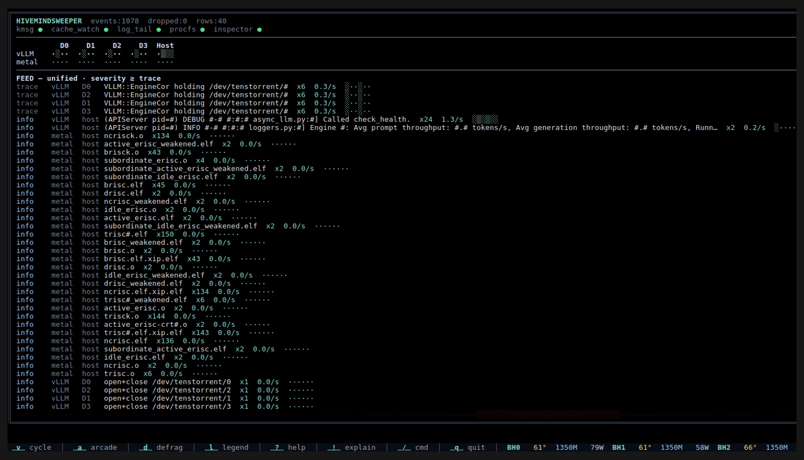
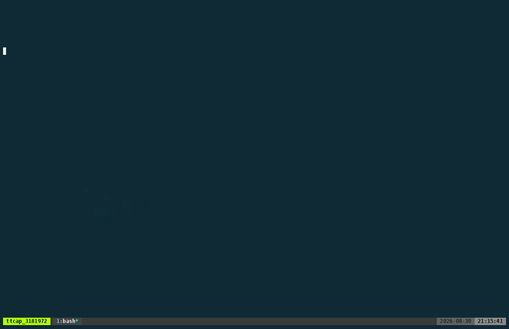
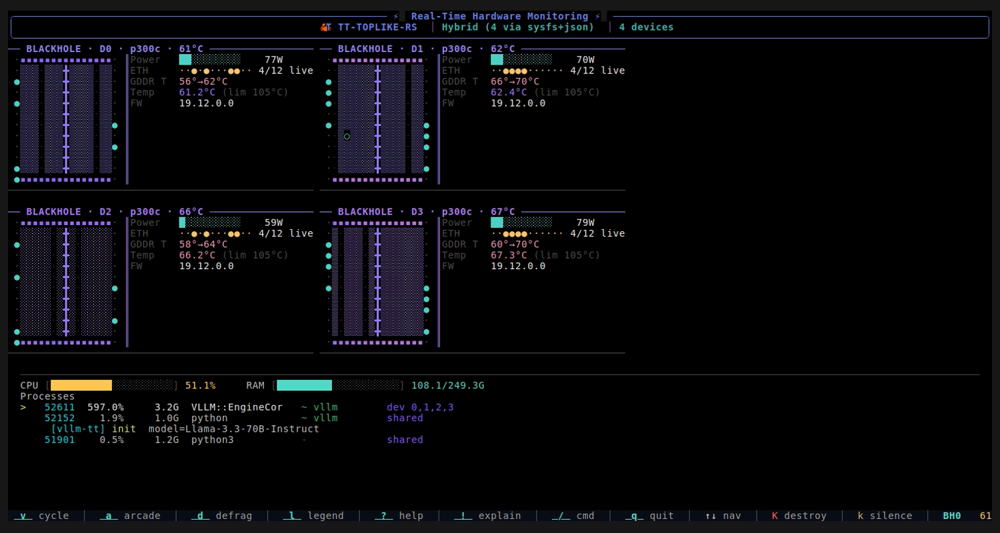
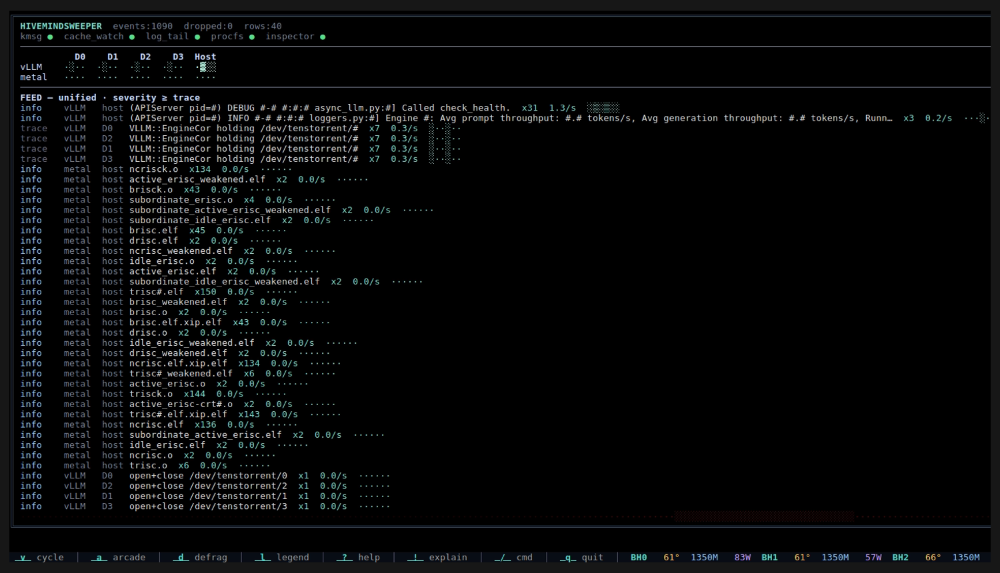
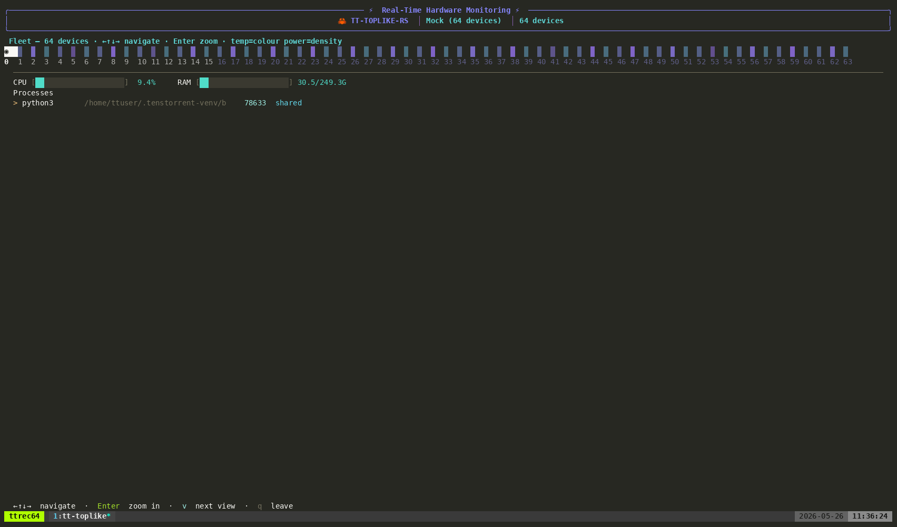

Tenstorrent Hardware Monitor · v0.13.0 · Rust
A psychedelic, ASCII-native terminal monitor for Tenstorrent Blackhole and Wormhole silicon. Tensix cores pulse with real power consumption. DRAM channels reveal their training state. NoC traffic flows as living particle streams. Every pixel earns its place.
See it live
Four Blackhole chips, idle and under inference load, rendered simultaneously. Watch the Tensix cores brighten as power climbs, DRAM channels report training state, and the NoC particle stream shifts with real traffic.
You put four Blackhole chips in a rack.
You fire up an LLM inference job.
And then — nothing. A blinking cursor. A log file.
We wanted to see it. Watch the DRAM channels train one by one at boot. Watch Tensix cores light up when the attention heads fire. See the NoC traffic as a river of particles moving between chiplets. Watch the temperature blush orange as the workload grows.
Not numbers in a table. Not a dashboard with gauges. A living picture of inference in motion.
What you see
There are no decorative animations. Every visual element is driven by real telemetry from the hardware — if it's moving, something changed on the chip.
Tensix Core Grid
Each star in the starfield is a real Tensix core. Its brightness tracks power consumption relative to the learned idle baseline. Its color shifts from cool cyan through yellow to hot red as temperature rises. The twinkle rate follows current draw. 224 cores on Blackhole, every one individually represented.
DRAM Channel Status
The DDR training bitmask from SMBUS telemetry is parsed per-channel and rendered in real time: ○ untrained, ◐ training (animated), ● trained, ✗ error. On Blackhole that's 12 channels — you can watch them come up one by one during the boot sequence.
Memory Hierarchy
The Memory Dungeon renders all four levels simultaneously: DDR at the base, L2 cache banks in the middle, L1 SRAM cores above, Tensix compute at the top. Four distinct particle types — Read ○◉, Write □■, CacheHit ◇◆, Miss ●⬤ — flow upward as real transactions complete.
NoC Particle Flow
The Memory Flow visualization maps the Network-on-Chip as a 2D field. Particles stream between the DDR perimeter and the Tensix core array, their density proportional to traffic, their color to temperature. Watch the flow change as inference shifts attention layers.
Inter-Chip Topology
Hardware topology is auto-detected from board_type.
Dual-chip carrier boards (p300, n300, QB2) show board groupings with
═══ / ←→ inter-chip links.
Independent PCIe cards (p150a, n150) display as equal-weight columns
with no spurious board labels — the board concept is suppressed entirely.
Scales from 2 to 32+ chips: side-by-side columns up to terminal width,
then a compact fleet grid with one power bar per chip.
PCIe Link Traffic
The driver keeps twelve data-word counters on the PCIe link, split by
direction and initiator. tt-toplike folds them into inbound and outbound
totals and differentiates them every tick, so the Insights panel shows the
link's geometry — Gen4 x4 — above live ▼/▲ byte rates.
That's the host↔chip pipe itself: weights streaming in at load time,
activations and results coming back during inference.
Arcade Hero
Arcade mode places a roguelike hero character at the intersection of power (vertical) and current (horizontal). Its color is temperature. It leaves a trail of recent positions. It's your avatar inside the chip — moving through DDR, L2, L1, and Tensix as the workload climbs.
Training
Watch a model learn. tt-toplike finds a running tt-train job on its own and draws it as the network it is: tokens streaming in, gradients washing back, and a range of loss mountains under an aurora that widens as the model converges.
Visualization modes
Press v to cycle, or jump directly with a (Arcade),
d (Defrag), g (Insights), i (Inference
Server Monitor), or ~ (HivemindSweeper). Every mode reads the same
live telemetry — power, temperature, aiclk, DDR state — and renders it
differently. Recordings below are from real 4× Blackhole hardware during live
LLM inference.


Screenshots
Captured on Blackhole hardware during live LLM inference. No mock data.

Insights mode — 4× Blackhole under live Llama-3.3-70B inference (vLLM across all four chips)
HivemindSweeper — vLLM serving + kernel compiles surfaced live on 4× Blackhole
Fleet grid — 64-device compact layoutLineage & inspiration
Every design decision in tt-toplike traces back to something that came before it — a game, a tool, a film, an art installation. Here's the direct lineage.
It started with a question: why does every hardware monitoring tool look like a 1995 spreadsheet? The hardware underneath is doing something genuinely spectacular — billions of SRAM operations per second, twelve DDR channels training in parallel, a mesh network-on-chip routing inference tokens across 224 Tensix cores — and the best we offer the operator is a table of numbers that refreshes every five seconds.
The Python ancestor of this tool (tt-top) proved the concept:
a terminal can be a window into the chip. tt-toplike reimplements that vision in Rust,
pushing the frame rate to 100ms, adding the adaptive baseline system that makes every
machine look alive regardless of its power envelope, and extending the visualization
language to cover things tt-top never attempted — DRAM training state, inter-chip topology,
the full memory hierarchy rendered as a living dungeon.
The design vocabulary draws from a very specific set of predecessors. Not dashboards. Not Grafana panels. Games, art tools, and the terminal programs that dared to be beautiful.
Missile Command & Yar's Revenge
Atari 2600 titles that proved a handful of pixels could carry enormous urgency. The particle systems in Memory Castle and Memory Flow inherit their kinetic grammar — objects with velocity, brief lives, and color that means something — directly from these two games.
TRON (film)
The visual metaphor of a human navigating the interior of a computer is the animating concept behind Arcade Mode. The grid aesthetic, the glowing wireframes, the sense that the machine has interior geography worth exploring — all TRON. The TRON Grid visualization mode is a direct homage.
NetHack / Dungeon Crawl Stone Soup
Roguelikes proved that ASCII art could have depth, atmosphere, and meaning. The Memory Castle visualization treats each character on screen as a semantic glyph — ○◉ are reads, □■ are writes, ◇◆ are cache hits. The dungeon aesthetic (layers, particles, environmental glyphs) comes directly from this tradition.
htop
The invention of the modern terminal monitor. Colored bars, real-time updates, a layout that made the CPU visible. tt-toplike inherits htop's fundamental premise — the terminal is a legitimate UI, not a fallback — and extends it from CPU threads to an entire AI accelerator chip.
Logstalgia
A web-server log visualizer that renders HTTP requests as a Pong-style particle game. The insight: any time-series data can be a particle system. Every DRAM transaction, every cache miss, every NoC packet is an event with a source, a destination, and a brief existence — exactly what Logstalgia taught us to see.
btop++
The modern heir to htop — richer colors, smoother animations, more information per pixel. The vibrant color palette in tt-toplike (deep blue-gray backgrounds, bright teal accents, psychedelic HSV cycling) is a direct response to btop++'s proof that terminal tools can look genuinely beautiful.
Technical foundation
tt-toplike is a Rust library with multiple frontends — a TUI binary, a PTY-hosted native window, and a hybrid backend that streams telemetry from tt-smi without ever touching PCI BAR0 while a workload is running.
Non-Invasive by Default
The default backend chain on Linux is Hybrid (sysfs + background tt-smi)
→ JSON (tt-smi subprocess) → Mock. Everything on that path is an ordinary
read of a kernel file: the hwmon sensors plus tt-kmd's own
/sys/class/tenstorrent/ attributes — clocks, ARC heartbeat,
firmware limits, PCIe counters. Direct PCI access via Luwen is only
attempted when --backend luwen is passed explicitly. You can
monitor an LLM inference job without any risk of disturbing the hardware state.
Streaming SMBUS at 1.5s
The HybridBackend spawns a persistent tt-smi subprocess that loops
every 1.5 seconds, writing RS-delimited JSON records to a pipe. A reader thread
parses each record and deposits it via an Arc-swap pointer — zero mutex
contention on the render path, no 5-second polling surge.
EMA Smoothing
Numeric SMBUS fields (temperature, power, clock frequencies) are blended through an exponential moving average (α=0.25) as each new snapshot arrives. Hard value jumps are distributed across ~4 frames, eliminating the visual discontinuity that makes monitoring tools feel choppy.
tt-toplike-app
A native egui window that hosts the full TUI inside a PTY — no terminal
emulator needed, no font configuration, no rendering artifacts. Launches
tt-toplike-tui as a child process, implements a complete
VT100/VT220 screen renderer including deferred auto-wrap, and draws each
cell via egui with full color fidelity.
Live Backend Switching
Press b in the TUI to cycle backends without restarting.
The visualization state is preserved; only the data source changes.
Useful for comparing Sysfs sensor readings against full SMBUS telemetry
side-by-side during the same session.
Debian Package
Ships as two Debian packages: tt-toplike (the TUI,
~750 KB stripped) and tt-toplike-app (the native window,
~4 MB with egui). All crates are vendored for offline reproducible builds.
Recommends tt-smi and tenstorrent-dkms from
the Tenstorrent PPA.
Get started
Add the Tenstorrent apt repository for the newest version — or grab a .deb from Releases, or build from source with Cargo.
Add the Tenstorrent apt repository (ppa.tenstorrent.com) —
the easiest way to get the latest version and stay current with
apt upgrade.
sudo install -m 0755 -d /etc/apt/keyrings
sudo wget -qO /etc/apt/keyrings/tt-pkg-key.asc https://ppa.tenstorrent.com/tt-pkg-key.asc
echo "deb [signed-by=/etc/apt/keyrings/tt-pkg-key.asc] https://ppa.tenstorrent.com/ubuntu/ $(. /etc/os-release && echo $VERSION_CODENAME) main" | sudo tee /etc/apt/sources.list.d/tenstorrent.list
sudo apt update
Install the TUI — plus the optional native window host:
sudo apt install tt-toplike # TUI monitor
sudo apt install tt-toplike-app # optional native window
Run with mock hardware to verify — or on real Tenstorrent silicon:
tt-toplike --mock --mock-devices 4 # no hardware needed
tt-toplike # auto-detects real hardware
tt-toplike --mode arcade # start in arcade mode
tt-toplike-app # native window (PTY-hosted TUI)
Or build from source (requires Rust 1.75+):
git clone https://github.com/tenstorrent/tt-toplike
cd tt-toplike
cargo build --release --bin tt-toplike-tui --features tui
./target/release/tt-toplike-tui --mock --mock-devices 4
v cycle viz mode
b switch backend
q / ESC quit
r force refresh